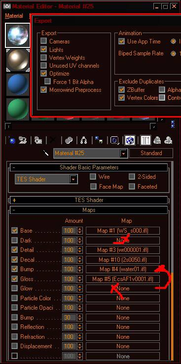

Текстурный поток, простой и удобный способ существенно благо украсить модели и оживить локации.
Самый простой и известный пример текстурного потока, это Вода.
Да, та самая поверхность воды в игре. Ее "движение" как раз и сделано потоком текстур.
Важно!
Либо по слоту Бампа.
Если экспортировать с флагом, может получиться битый файл! И вылет 3д МАХа при экспорте = 99%
Поэтому, лучше всегда экспортировать со снятым флагом и не забывайте сохранить файл пред экспортом.
Использование и создание в максе, облегчает наложение UV моделей.
Хотя создавать сами потоки на поверхности уже имеющей UV, возможно, будет проще в нифскопе.
Итого!
-
открыть редактор материалов (М)
-
открыть проводник файлов текстур. Либо xnview, либо непосредственно папку с файлами.
-
перетянуть любую текстуру на шарик материала в редакторе!
-
теперь можно настроить ТЕС шейдер. *либо НетИмерсеШейдер, если будет пользоваться ФФЕ версия экспортера.
-
Выбрать слот, на котором будет работать Поток. (Base, Detail, dark и пр.)
-
Раздел bitMaps parameters — bitMap. Начать лучше со слота Base.
-
Жмем на кнопку и в появившемся окне ищем ту текстуру, которую собственно и хотим назначить.
-
В появившемся окне ставим флаг Sequence и жмем Open.
*флаг Include image patch не влияет на экспорт модели.
6. Все.
Для получения потока нужная серия текстур!
Т.е. общее имя + последовательные номера.
Water01.dds, Water02.dds и так далее.
Текстуры следует выбирать по первому файлу потока!
Т.е. номер 001.
Все остальные подхватываются автоматически, это и есть Секвенция.
Главное, чтобы имена и номера текстур шли одной серией.
На каждом слоте текстур, может быть свой уникальный поток.
Но можно использовать и одинаковый.
Т.е. на базовом слоте один, на глоу второй, на дарк третий, а на глосс снова первый...
Примечание.
Контроль времени и тип работы Потока, можно задавать в редакторе материалов.
выбрать материал - раскрыть слот текстуры - Time.
Примечание.
|
Start Frame
|
Если не 0, это сократит кол-во текстур в потоке на указанное число фреймов.
Здесь это будет -5 от общего кол-ва в потоке, т.е. 45 текстур будет указано в контроллере
|
|
End frame
|
По умолчанию равен числу текстур в потоке.
Можно сократить, если есть такое желание.
|
|
Every nth
|
Если указать не 1, то сильно сократит кол-во текстур потока, вместо 30, останется 15.
Т.е. текстуры будут загружены через указанное здесь значение
|
|
Multiplier
|
Интересная вещь!
Создает умножение записей о текстурах.
Т.е. каждая текстура будет записана в контроллере Х раз к ряду.
Что скажется на общем замедлении анимации, т.к. текстура будет повторяться на протяжении нескольких фреймов.
|
Примечание.
Материал может быть любым, хоть Блинн хоть Металл.
Но тесшейдер позволяет использовать все слоты.
Примечание.
Поток может быть на любом слоте по отдельности!
Как это показали (07 2019) эксперименты!
Т.к. тут принцип воздействия несколько иной.
Также, поток может быть сразу на (почти) всех слотах!
Т.е. можно создавать очень сложные анимации на одной поверхности.
Наличие статичной текстуры - не обязательно.
Т.е. все слоты могут использовать поток.
Примечание.
Речь о моделях с потоком текстур!
Что можно совмещать, а что будет приводить к ошибке и вылету МАХа при экспорте такой модели.
Это важно помнить, чтобы избежать потери работы, забыв сохранить файл перед экспортом.
ТЕСшейдер: связка Бамп + Глоу = вылет.
ФФЕ шейдер: связка Глос + Бамп = синяя модель.
Дарк + Глоу + Бамп = вылет и битая модель. Для всех модулей.
Дарк + Бамп = вылет и битая модель. Для всех модулей.
Собственно выяснилось, что экспорт Потока по Бампу + Дарк слотам приводит к вылету МАХа и к убитому ниф файлу.
По каким-то причинам, они конфликтуют между собой, также, как БАМП + ГЛОУ.
Бамп конфликтует с дарк, только если на этих слотах есть Поток.
Если на этих слотах статичные текстуры - проблем нет.
Но если на любом из них, или на обоих двух сразу - есть Поток, будет вылет МАХа и битая модель.
Если на одном их них есть поток, а на другом статичная текстура - вылет и битая модель!
Экспорт можно проводить, только если на одном из этих слотов Пусто.
Ранние тесты показывали, что на бампе поток не работает.
Модели экспортировались, настраивались, но в игре не отображались..
Либо являли странное поведение...
Рельеф бампа (с рефлектом) оставался не подвижен, но за ним просматривалась бегающая текстура.
При этом, модель покрывалась синевой и теряла прозрачность по маске.
Так что, было не ясно, можно ли заставить «двигаться» карту бампа, или нет.
По видимости тут есть некий баг движка.
Однако, пару разу удалось "заставить" эту карту заработать, но результаты оставались не воспроизводимы.
Бамп + Глосс и эффекты текстурного освещения.
Если это не какой-то (Позитивный) Глюк видеодрайвера, то возможность использования потока на всех слотах все же есть!
А что самое интересное, поток по Gloss карте тоже работает!
Оказывая влияние и на поток Bumpа.
Однако есть некоторые ограничения.
- Не возможно экспортировать поток по Dark карте, если одновременно использован поток и на слоте Bump.
Обратное тоже верно.
Прочие слоты могут использовать потоки, но при добавлении Потока на Dark и Bump - будет вылет МАХа и битый файл.
Однако, если использовать поток только на Dark слоту, он экспортируется нормально.
Обратное тоже верно.
Возможно дело в микшировании каналов, т.к. слот Dark работает как маска.
- Не возможно экспортировать Bump+Dark с потоком.
- Не возможно экспортировать Bump+Glow вместе.
Это штатный баг ФФЕ и ТЕСэкспортеров. Что для статичной текстуры, что для потока.
- Экспорт надо проводить со СНЯТЫМ флагом controllers (в настройках ТЕСэкспортера).
Что странно, ТЕСэкспортер проводит экспорт без вылета в данном случае.
Но ФФЕ - может выбросить МАХ в ошибку.
Работоспособные настройки экспорта и скрин материала 3д МАХа см. внизу страницы.
Примечание.
Потоки могут быть СРАЗУ на всех слотах.
Кроме дарк, бампа и глоу одновременно!
Также нельзя накладывать статичные текстуры и поток вместе.
Т.е. если поток есть по Дарку, то наличие статичной карты на Бампе приведет к вылету и битому файлу.
Примечание.
Учитывается правило альфа канала, если базовая (или дарк) текстура его имеет, все прочие потоки, будут работать по нему!
Т.е. можно создавать анимацию текстур по маске альфа канала.
На объект, в max properties полезно ставить флаг анимации! Иначе, придется править в нифскопе.
Поток, можно использовать на частицах, но слишком большое кол-во кадров, приведет к потере фпс.
Форматы потока текстур — стандартные. TGA или DDS.
Можно накладывать АВИ файл, но следует помнить, что МАХ распотрошит ролик на кадры и положит их в папку с игрой.
Но, слишком длинный поток, в высоком разрешении текстур, может вызывать подвисания при первом появлении в кадре.
И в целом, просаживать фпс.
Примечание.
После создание потока, в папке текстур появится файл ИМЯТЕКСТУРЫ.ifl, который можно редактировать через блокнот в случае необходимости добавления, или замены текстур для МАХа, но для МВ, этот файл, не нужен и его можно удалять.
Не забывайте перемещать, либо удалять такие файлы из каталога текстур МВ при упаковке плагина.
Для моделей, они НЕ нужны!
*но МАХ будет ругаться на его отсутствие при следующем открытии файла.
Можно игнорировать, можно создать новый, либо вернуть файл на место.
Примечание.
В случае если текстуры лежат не в корне папки Textures, но в некой вложенной папке (где им и самое место),
то придется перенастраивать поток, через нифскоп!
Однако, МАХ, видит и отображает текстуры из вложенных папок, что позволяет удобно настроить основные параметры анимации и прописать, оную, в желаемые слоты текстур.
ТЕСэкспортер, не умеет прописывать пути к текстурам при экспорте!
Примечание.
Возможно, Поток удобнее создавать в Нифскопе, нежели в МАХе.
Т.е. можно назначать оный и на Глоу с Бампом и на 2 слота Декалей сразу.
На Dark тоже можно назначить, но такие модели будут работать только с МСП.
Т.е. если есть потоки и на других слотах, игра и редактор будут улетать в ошибки.
Примечание.
Еще стоит отметить, что МСП 2.4 версии, как и МВСЕ 2.х версии имеют в своем составе патчи который могут исправлять некоторые проблемы!
Т.е. совмещение потоков по разным слотам.
Однако, стоит отдельно уточнять об этом.
Т.к. не тестировалось!
|
|
настройки по умолчанию. Кол-во фреймов = кол-ву текстур
|
 Настройки экспорта для анимации по всем слотам.
Dark не сработает!
Gloss будет работать!
Bump+Glow=
краш
|
Собственно ниф файл и модель в редакторе.
Повторы текстур полученные через Мультиплер в МАХе.
|